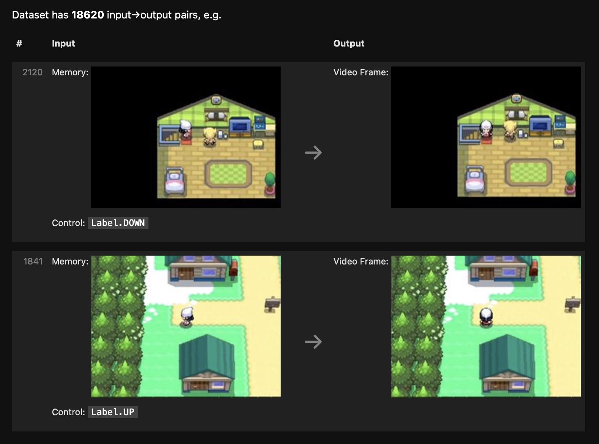

I made a playable Pokémon overworld. It looks (mostly) like a normal video game, and you can try it in your web browser here:
Although this looks like a video game, I did not write any game code.
This program is actually a neural network mimicking a video game.
Program? Game? Neural network?
Programs: sequences of instructions that transform input→output
A human could run through these instructions to transform input into output:
Instructions
e.g. (190, 10)→100, or (2, 4)→3
- Take two input numbers
- Sum the numbers
- Halve that to get your output
The instructions above are a program, written in natural language, for humans. Some in-between steps are unspecified (how do you add two numbers? what even is a number, anyway?) but it's okay, because humans have a lot of background knowledge that they can use to fill in the gaps.
Programs are usually written in programming languages, for computers
A computer could run through these instructions to transform input into output:
print((
int(input("1st number: ")) + int(input("2nd number: "))
) / 2)
This is also a program (the same one as before), now written in a programming language. Computers can directly translate programming languages into computer languages.
This means, if we write our program in a programming language, no human ever needs to run through the program. We can just ask a computer to do it.
The "literal genie" problem
The downside of writing our program for a computer (instead of a human) is that computers have very little background knowledge. A computer will always obediently and uncreatively follow the precise instructions we wrote down.
This often leads to "literal genie" scenarios, where the computer does what we wrote and not what we wanted.
A video game is a type of a program
A video game is some program that takes controls (like ["up", "down"]) as input, and then produces video frames as output. Pokémon is a good example.
A neural network is also a type of program
Neural networks are like the Ditto of programs. We can write ("train") a neural network to mimic any other program that exists or could conceivably exist.
In principle, we could train a neural network to mimic a video game, and then use the trained network instead of the "real" game, and no one would notice the difference.
Principles are often misleading, though - how do we actually get a network-as-game working in practice? What specifically do we have to do? What if it doesn't work?
How do you write a neural network, anyway?
Neural networks are written in dataset
Most programs (and most video games) are written as code in traditional programming languages. Neural networks, though, are "written" in dataset. The input→output instructions for a neural network are literally written as a big list of desired input→output pairs.
So, to mimic a Pokémon game with a neural network, I first needed a dataset of (controls, memory)→(video frame) pairs that demonstrated every game-like behavior I wanted the network to exhibit.
Collecting a dataset
I downloaded, cropped, and resized some Pokémon "Let's Play" videos to get a bunch of reference outputs (video frames).
These video frames were missing the corresponding input (control) information. I just labeled them with my best guess.
To avoid having to label any "memory" input or output - I planned to just feed in the previous video frame instead.
This "everything offscreen is forgotten" setup meant that gameplay would be... shallow, to say the least. Still, if a network could mimic this dataset, it seemed like enough for a demo.
Writing training code
Writing an untrained neural network
To get a neural network that mimics our dataset, we start with a neural network that doesn't.
This neural network will have lots of magic numbers "learnable parameters" inside, each controlling the behavior of a single neuron within the network. For different choices of parameter values, the network will do different things. Initially, the parameters are set randomly, and the network doesn't do anything useful.
I wrote a network with around 300k parameters - tiny, by neural network standards.
Writing scoring code
Next, we need a way to measure how good our neural network is at mimicking the dataset. We write some "scoring" code that grabs random (input→output) pairs from our dataset, runs the neural network on those inputs, and scores how well the network's outputs match the actual reference outputs from the dataset.
By convention, our score measures the amount of error between the network's prediction and the reference output from the dataset. Lower is better, and zero is the best possible score.
In my case, the randomly-initialized network produced the same gray frame for each input, and scored poorly. I needed a better set of parameters.
Writing a training loop
To get a good choice of parameters, we make a training loop - a bit of code which repeatedly runs the score-estimation code and makes small changes to the network's parameters to improve the network's score.This code checks, for each parameter, whether the score would improve by wiggling that parameter slightly up or slightly down. Then the code moves all parameters slightly in their individual directions-of-improvement, and hopes for the best.
The training loop will also periodically show us some visualizations.
As our training loop runs, our parameters change, and our average score gets better and better. Before our eyes, a training loop gradually transforms our randomly-initialized, undifferentiated network into a specific neural network that mimics our specific dataset.
Eventually, the training updates start cancelling each other out, and the score gradually stops improving. If it worked, we now have a network that scores well and successfully mimics the input→output behavior from our dataset.
If it really worked, our network will have learned general rules for mimicry that work for unseen inputs as well.
Our training procedure favors parameter configurations that are close to the initial random values, and maximally-uninformed about any specific dataset example, and the network usually doesn't have enough neurons to memorize the whole dataset anyway, so we have a decent chance of generalization.
After I trained my network for a while, its predictions looked pretty good, and the score looked fine too. I'd translated my dataset into a runnable program. Time to run it.
The genie strikes
When I tried to play this initial network like a video game, unfortunately, my trained neural network was a neural notwork. Totally broken.
What the heck! Training loops are code, and could have bugs... but training converged and everything. Is it "overfitting"? Is Pokémon emulation "AI-complete"?
Is deep learning "hitting a wall", here, in this blog post?
The three problems neural networks have
Unfortunately, even if we have coded a perfect training loop, there are three "literal genie gives us exactly what we ask for"-type problems that training can't fix, three reasons that the neural network we wrote might not do what we wanted.
Problem 1 - It's underpowered. A network can't give itself more neurons.
Our network may be too weak to represent the full input→output relationship described by the dataset (even if we find the best-possible parameters).
With more training, an underpowered network will just keep scoring poorly, forever.
We must make our network structure task-appropriate, or just very expressive (lots of neurons / layers), so that a solution (perfect-scoring set of parameters) actually exists.
In this case, I wanted my network to be small / simple enough that it could run in a web browser without much deliberate performance optimization on my part - so it was deliberately underpowered.
I tried doubling the model capacity to around 600k parameters, and did my best to allocate this capacity sensibly based on my understanding of the game-emulation task. I was able to get the training loss a bit lower, and when I tested this trained model it started strong, but gameplay still eventually collapsed.
Darn. What else could be wrong with my network?
Problem 2 - It's underinformed. A network can't give itself missing input information.
The inputs in our dataset may not contain enough information to, in general, determine the correct output. In this case, there exists no general program that would get a perfect score.
With more training, an underinformed network will probably keep scoring imperfectly at everything (via "blurry" predictions that blend several guesses). Eventually, an underinformed network may start getting a perfect score on the training dataset by brute-force memorization, while getting no better in general.
We must feed the network all necessary input information per example, and fix any inconsistencies in the corresponding outputs, so that every output is exactly knowable from the corresponding input via the same general rule.
In my case, the lack of true memory input was definitely hindering the network. Still, I took steps to reduce the ambiguity in my frame-to-frame dataset:
- I scrubbed through the dataset to fix inconsistencies in the "control" labeling.
- During training, I let the network make several distinct guesses per example, and only scored the best guess, to simulate having extra input information.
After working to address both Problem 1 and Problem 2, my network's predictions on the training dataset looked a bit better, and the loss was even lower. When played as a video game, it seemed to work okay for a while, but still eventually collapsed into a soup.
Thinking it through, Problem 1 and Problem 2 should have only caused imperfections, not catastrophic failure. So my network must be afflicted with something else, some sort of horrible "Problem 3"...
Problem 3 - It's underdefined. A network can't read our mind to learn about input→output requirements we omitted from the dataset.
We may desire input→output behaviors from our network that we never write down as input→output pairs in our training dataset. That's bad. It's very bad. It's even more bad than problem 1 or problem 2, because the magnitude of failure for "never-represented-in-the-dataset" inputs is potentially unbounded.
Every input→output behavior we care about must be written in the training dataset as an input→output pair. Ideally many pairs, many variations, so that getting a perfect score will require the network to learn a general rule for this entire category of inputs.
In my case, I had wanted to feed my neural network its own output, in a loop, and get game-like video frames out, even after many iterations.
This was not an input→output requirement I told the network about during training, though. I only trained my network to produce video frame outputs for real video frame inputs. I was invoking undefined behavior at test time.
The solution to "our network works during training but not when we test it" is, of course, use a sophisticated regularization strategy label the test data and train on them too.
If we keep doing this, eventually the set of training inputs will expand to cover the kind of inputs we are testing the network on, and we won't be invoking undefined behavior anymore.
In my case, this just meant I needed to occasionally have the network inputs be previous neural network outputs (instead of "real" frames) during training, so that the network would learn to continue gameplay from a previous network-predicted frame.
While I was at it, I also decided to drop out the input frames occasionally (random static with 1% probability, black void with 1% probability), so that the network would learn to initialize gameplay from an empty canvas.
Successful training, at last
After addressing all three problems, my network was suitably powered, informed, and defined. My trained network mimicked the dataset acceptably well, even during the "test scenario" of long-running gameplay. This is the version used in the web demo.
More engineering could always make the network better (clean up the dataset, add more data, optimize the run-network-in-web-browser code, make the network bigger, optimize the training loop, train it longer). If we fix the missing input information, we could get even get inventory working, and get battles working, and so on... but this network is already good enough to demonstrate the point.
So, what's the point
Neural networks are not a "black box"
If we only encounter neural networks written by others, it is easy to think of neural networks as prepackaged unitaskers; "black boxes" which are uniquely suited for exactly the set of tasks that neural networks already do.
I've seen this kind of take floating around the internet a lot:
Neural networks are just the latest algorithm for making toast;
why are people so excited?
(Substitute "making toast" for playing chess, writing a poem, painting a picture, whatever the neural network is doing)
There's also the enthusiastic version:
I love neural networks, and use them for all my heat-on-bread needs!
Even the enthusiasts typically admit that neural networks are mysterious, with limited practical applicability:
Neural networks are still untrustworthy "black boxes" which fail for weird reasons that we have no way to debug. They're state-of-the-art for certain specific tasks, which makes them useful, but neural networks are not ready to do everything just yet.
The way forward is to combine the best of cutting-edge neural networks with principled traditional code, in a modular and interpretable fashion, utilizing the best of the old while embracing the new, etc. etc.
It sounds very sensible and wise - who could possibly dislike a dispassionate acknowledgement of tradeoffs, followed by a pledge to combine the best of two things?
I think this framing is wrong, though. In my experience, neural networks are not "black boxes". They're just programs that do what you trained them to do. They often fail to do what you wanted, for the same boring "literal genie"-type reasons any computer program ever fails.
Moreover, when it comes to "interpretability", there's a very specific problem with traditional code, a problem that neural networks solve outright.
The problem with code
The problem with code is that each line of code you write obfuscates a program's input→output behavior further.
To define a simple, basic program, writing traditional code in a traditional programming language works great. You just write down the steps you want to happen, in order, and then that's what happens. To know what the code "does", you can just read it.
Code is alive, though. To know what your code actually does, you have to run it. As you add more lines of code, the gap between what code "does" and what it actually does grows ever bigger.
With enough code, you get unpredictable runtime, inexplicable behavior, mysterious bugs whose "fix" takes a week to write and introduces three new bugs. You are entirely reliant on end-to-end testing (run the code on a dataset of inputs, wait for it to finish, and check the program's outputs against known-good outputs) to get any input→output guarantees at all.
"Modular and interpretable code" sounds great until you are staring at 100 modules with 100,000 lines of code each and someone is asking you to interpret it.
The magic of data
Programmers (notably game programmers) have learned to offload program complexity into data. Numbers go into config files, 1d arrays go into audio files, 2d arrays go into image files, and so forth.
Unlike code, data is easy to understand and easy to edit. Unlike code, different pieces of data can safely be edited in parallel by many different teams. Unlike code, data is not alive.
By offloading complexity into data files, a program can keep growing (100MB... 1GB... 10GB), while the proportion of program complexity written in living code gets smaller and smaller. The input→output behavior hurtles towards unknowability, but at a sub-linear rate.
Neural networks: an entire program made of data
Neural networks are both the solution to the "each line of code obfuscates my program's input→output behavior further" problem, and the natural terminus to the offload-complexity-as-data strategy that programmers already use.
With a neural network, you write the intended input→output behavior of your program directly and explicitly as data in the training dataset. Every "for this input, produce this output", every "except for this one case, then do this other thing". It's all just there.
Regardless of how complicated your program's behavior is, if you write it as a neural network, the program remains interpretable. To know what your neural network actually does, just read the dataset.
Games via neural network... really?
Admittedly, this whole video-game-written-as-neural-network thing hasn't quite caught on yet.
Apart from the "underpowered, underinformed, and underdefined" problems I covered earlier, and apart from the cultural inertia of "modular and interpretable" approaches, there is also an embarrassing ~16× slowdown when computation is done via neuron activations instead of ones and zeros. For games, that's not welcome news.
The kind of game-as-neural-network that can fit in your web browser today is... pretty tiny, and limited to rendering tiny, low-resolution games. The networks that fit in your web browser in 2030 will probably be capable of more. Like, a lot more.
So, I expect neural networks will subsume games. From the outside in, starting from the final video frames, chewing through G-buffers, replacing layers of "modular and interpretable" code one by one.
Once you've successfully used a neural network for a single layer in your nightmarishly-complicated, it-only-works-at-all-because-integration-tests-enforce-the-intended-behavior program, someone is going to ask the obvious question about the adjacent layers.
This layer of code is so complicated. No one seems to understand how to make it faster, or how to make it better, or why it works at all.
We're feeding the output to a neural network anyway.
Couldn't the network just... do this part too?
Since neural networks are programs, the answer is always yes! They can mimic anything. As long as you specify the behavior you want, really, really precisely.